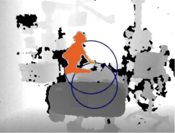
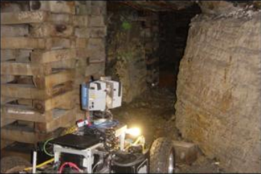

Papers
|
Learning Convolutional Action Primitives from Multimodal Timeseries Data Colin Lea, R Vidal, G Hager In review (email for preprint) |
 |
|
Transition State Clustering: Unsupervised Surgical Trajectory Segmentation For Robot Learning
Sanjay Krishnan, Animesh Garg, Sachin Patil, Colin Lea, Greg Hager, Pieter Abbeel, Ken Goldberg ISRR 2015 |
 |
|
A Framework for End-User Instruction of a Robot Assistant for Manufacturing
Kelleher Guerin, Colin Lea, Chris Paxton, Greg Hager ICRA 2015 |
 |
|
An Improved Model for Segmentation and Recognition of Fine Grained Activities with Application to Surgical Training Tasks
Colin Lea, Greg Hager, Rene Vidal WACV 2015 |
 |
|
Using Vision to Improve Activity Recognition for Surgical Training Tasks Colin Lea, Greg Hager, Rene Vidal IROS Workshop on The Role of Human Sensorimotor Control in Surgical Robotics 2014 |
|
3D Sensing Algorithms Towards Building an Intelligent Intensive Care Unit Colin Lea, James Fackler, Greg Hager, Russell Taylor and Suchi Saria AMIA Clinical Research Informatics 2013 |
 |
|
Towards Automated Activity Recognition in an Intensive Care Unit Colin Lea, James Fackler, Greg Hager and Russ Taylor MICCAI 2012: Workshop on Modeling and Monitoring of Computer Assisted Interventions (M2CAI) |
 |
|
Comparative evaluation of range sensing technologies for underground void modeling Uland Wong, Aaron Morris, Colin Lea, James Lee, Chuck Whittaker, Ben Garney, and Red Whittaker IROS 2011 |
 |
Videos
|
CoSTAR: Collaborative System for Task Automation and Recognition Kelleher Guerin, Colin Lea, Chris Paxton, Greg Hager AAAI Video Competition 2015 |
Technical Reports
|
Efficient Hierarchical Markov Random Fields for Object Detection on a Mobile Robot (2011) Colin Lea and Jason Corso |
|
Object Detection and Pose Estimation Using SIFT and MROL (2011) Colin Lea, Kevin Yam, Dan Molik, Lai Lee Senior Design Project |
|
Big Blue: An Entry into the Intelligent Ground Vehicle Competition
[2011]
[2010]
[2009]
UB Robotics Club |
|
Mapping and Remote Operation of the Lego Mindstorms NXT Platform. Colin Lea and Venkat Krovi January 2009 |
Posters
|
Object Recognition and Pose Estimation using SIFT and MROL Techniques Colin Lea, Julian Ryde, Nick Hillier, Jason Corso IROS 2011: Solutions in Perception Challenge |
|
Image-based, Geometric Sensing of Unstructured Environments Colin Lea, Uland Wong, Red Whittaker Carnegie Mellon Summer Scholars, August 2010 |
|
Haptics-Augmented User Interaction Colin Lea, Venkat Krovi University at Buffalo Celebration of Academic Excellence, April 2010 |
|
Design of an Unmanned Ground Vehicle UB Robotics Club University at Buffalo Celebration of Academic Excellence, April 2009 |
Journal Club Presentations
|
Summer 2014
Hidden Part Models for Human Action Recognition: Probabilistic vs. Max-Margin. Y Wang, G Mori. PAMI 2011. From Stochastic Grammar to Bayes Network: Probabilistic Parsing of Complex Activity. N Vo, A Bobick. CVPR 2014. Hidden Semi-Markov Models K Murphy. 2002. |
|
Spring 2013
Mining Actonlet Ensemble for Acton Recogniton with Depth Cameras. J Wang, Z Liu, Y Wu, J Yuan. CVPR 2012. Nonparametric Discovery of Activity Patterns from Video Collections. M Hughes, E Sudderth. CVPR 2012. Learning Human Actvites and Object Affordances from RGB-D Videos. H Koppula, R Gupta, A Saxena. IJRR 2013. Hallucinating Humans as the Hidden Context for Labeling 3D Scenes. Y Jian, H Koppula, A Saxena. CVPR 2013. |
|
Fall 2012
A User-Centered and Workflow-Aware Unified Display for the Operating Room. R Stauder, V Belagiannis, L Schwarz, A Bigdelou, E Sohngen, S Ilic, N Navav. MICCAI: M2CAI Workshop 2012. |
|
Spring 2012
Real-time Identification and Localization of Body Parts from Depth Images. C Plagemann, V Ganapathi, D Koller, S Thrun. ICRA 2010. |